|
UnityToolbox
Brief documentation for all existing scripts.
|

|
|
UnityToolbox
Brief documentation for all existing scripts.
|
|
The prerequisites for using this system are:
To use the terrain generation, one can open the Terrain Generation window via the menu bar "UnityToolbox" -> "Terrain Generation":
| Menu Bar |
|---|
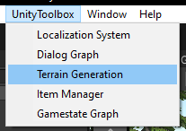
|
Here you will be prompted to enter a directory, which will be used to store the required data.
This directory must be within a "Resource" folder and can be changed via the Settings tab:
| Settings Tab |
|---|
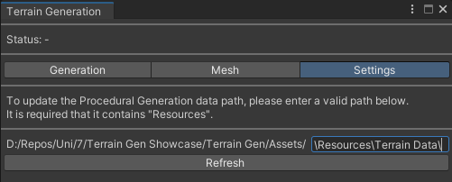
|
The terrain generation is built to combine different procedural generation algorithms with different mesh generation algorithms.
The generation tab contains all general information of the created generator. Here selected generators can be deleted with - and added with +.
To change the name of a generator, use the same text field and press Save/Rename at the bottom of the window.
Additionally, the Procedural Generation Types can be set to define the basis of the generation.
The settings for the generation type will then appear below.
| Generation Tab |
|---|
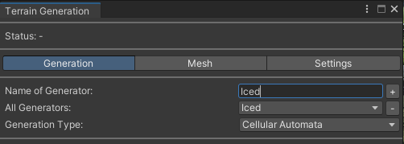
|
The mesh tab offers a selection of Mesh Generation Types. The settings of the selected type will then also appear below.
The generation settings can be tested beforehand with the Generate Example With Static Size button.
As the name suggests, the any size related values are static account.
| Mesh Tab |
|---|
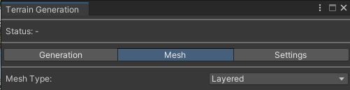
|
When creating terrain within the editor, the shader data is serialized to the set "Resources" folder.
If it is created at runtime, no data will be saved. Therefore, if the scene is reloaded and no data is created beforehand, the terrain will be displayed incorrectly.
To create terrain, the script Terrain Generation must be added to a game object.
It requires a material, which runs on the TerrainShader. The following texture data is explained under following sub section.
| Terrain Generation Script |
|---|
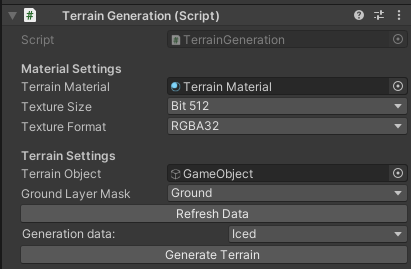
|
The terrain object parents the created game objects. Setting the ground layer is required for the asset placement to work.
Now the Generate Terrain button can be clicked, or TerrainGeneration.GenerateTerrain() can be executed to create the terrain with set data.
Lastly, each mesh generation type contains settings to define height data. This data contains information on how the terrain shader should render the mesh.
The layers are adjusted by height and have various settings for the texturing.
| Height Data Window |
|---|
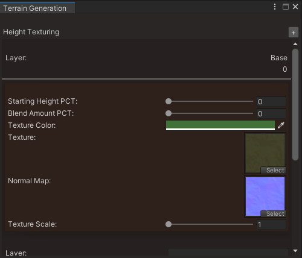
|
All textured used here must also be saved within a resources folder. Once deleted or moved outside of a resources folder, an error window will pop up, notifying you of the missing data.
The error window can only be closed once data is reestablished and saved.
| Error Window |
|---|
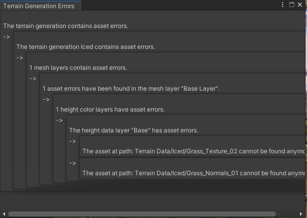
|
Additionally these textures must be set to enable Read/Write and have their Max Size equal to the size set within the Terrain Generation script.
A low texture size value is recommended if many textures are used, as the shader might run out of memory, resulting in wrong looking terrain otherwise.
| Texture Settings |
|---|
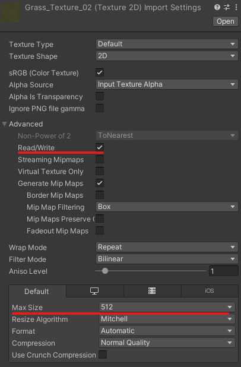
|
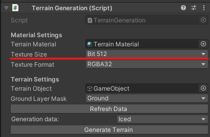
|
The texture format can mostly be set to anything corresponding to the texture, but it is recommended to use the format RGBA32.
Currently the following generation types exist. They define the base structure of the then generated mesh.
The Cellular Automata defines a set of rules for each cell within the grid.
The rules can be adjusted with the following values.
| Cellular Automata Example Values |
|---|
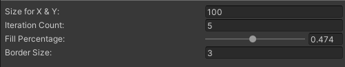
|
The Iteration Count defines how often the algorithm should run through the grid with defined Size for X & Y.
Initially the grid is filled with random values, dependent on the Fill Percentage.
Currently the following mesh generation types exist. They generate on basis of the grid defined beforehand.
The layered mesh generation uses the floor layer of the generated grid as a basis. The wall values will be stacked with layers until either no space or layer is left.
Different layers can be chosen to define how the layers are generated, although currently only a default ground layer can be selected.
Each layer defines height data for the terrain shader, and asset data, clustered and single. Additionally general settings can be found for the generation type and layers.
| Layered Header |
|---|
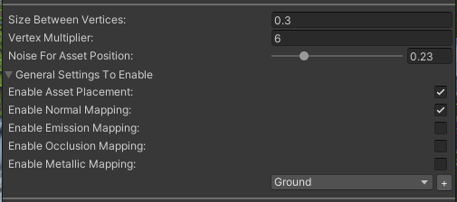
|
The Size Between Vertices defines how much space should be between each generated vertex. Higher values result in a more stretched out mesh.
The Vertex Multiplier adds filler values between each generated value by the grid generation. Higher values result in a more defined mesh.
The Noise For Asset Position adds randomness to the asset placement. The randomness cannot exceed above or below the other vertices. Other than the Enable Asset Placement option, which is useful to adjust the mesh itself without removing asset placement settings, the other settings are options for the height data.
These options are usually within the height data itself, but are generalized for the layered generation.
Below layers can be added and defined.
| Layered Layer |
|---|
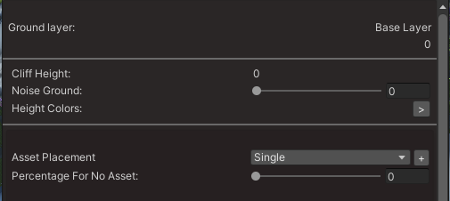
|
The Cliff Height defines how high the layer should be, calculated from the last layer. The Base Layer cannot be changed.
The Noise Ground value defines how much noise the ground should have. Higher values result in rougher terrain.
The Height Colors define the height data for the layer. Although it is set for the layer, the blend factor will blend into the layer below.
Additionally setting the first height layer to a non zero starting height will lead to the previous height data layer to go above its own ground layer.
Lastly the assets can be set. There are two different kinds of asset spawns. The default Single asset placement, which places an asset for each vertex depending on the odds, and the Clustered asset placement.
The last will also place Single assets going for its original position and spreading out, resulting in a cluster of assets.
The Percentage For No Asset defines whether an asset should be selected at all for a given vertex.
| Single Asset |
|---|
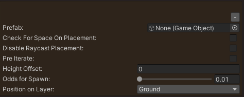
|
The Single asset contains the prefab which will be placed.
If Check For Space On Placement is enabled the asset will only be placed if no other asset with the same setting is present.
If Disable Raycast Placement is enabled, then the asset will simply be placed with its offset.
The raycast placement places the smaller asset with rotation based on the ground levels around it and otherwise on the lowest level.
Additionally, if the prefab contains children, all children will be parented to the mesh, disbanding the prefab structure.
The Pre Iterate option will place assets in an earlier iteration of the asset placement. This is useful for ground coverage like grass.
The Height Offset will place the asset with an offset.
The Position on Layer will define whether the asset will be placed on the ground or cliff side of a layer.
The Odds For Spawn will adjust the odds for the spawn. These odds are not percentages.
The selection of a asset will depend on the Position on Layer of each asset. If only one asset is set to spawn on cliffs, this asset will be selected 100% of the time, if a selection takes place.
If only one asset is set to Pre Iterate, this asset will also be selected 100% of the time, if a selection takes place.
The odds for each case, will be added up. Two ground placed assets with the odds 1 and 6, will result in the odds 1/7 and 6/7.
If the odds need to be toned down for only one case, instead of for all via the Percentage For No Asset, then a Single asset placement can be created containing an empty prefab.
| Empty Asset |
|---|
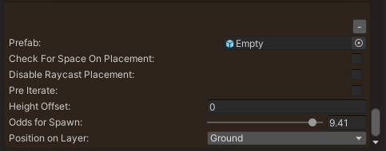
|
The Clustered asset placement can contain multiple Single assets, which are placed in a cluster.
The Odds for Spawn of the contained assets will only be internal to the cluster.
If a cluster is selected, at least one asset of the cluster will always be spawned.
For the surrounding vertices, the odds are reduced by the Spawn Percentage Decay. This is repeated until all odds are gone.
| Clustered Asset |
|---|
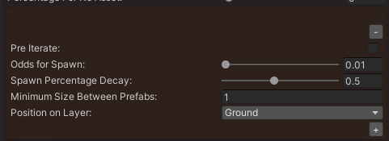
|
One must be warned, as this placement is recursive, that if the placement odds are not adjusted or high in general, the script will run a long time.
Having only one Clustered asset placement with a Percentage For No Asset of 0 and mesh size of 100 vertices on X & Y, will lead to a runtime of (100 * 100)^x, with x being dependent on the Spawn Percentage Decay!